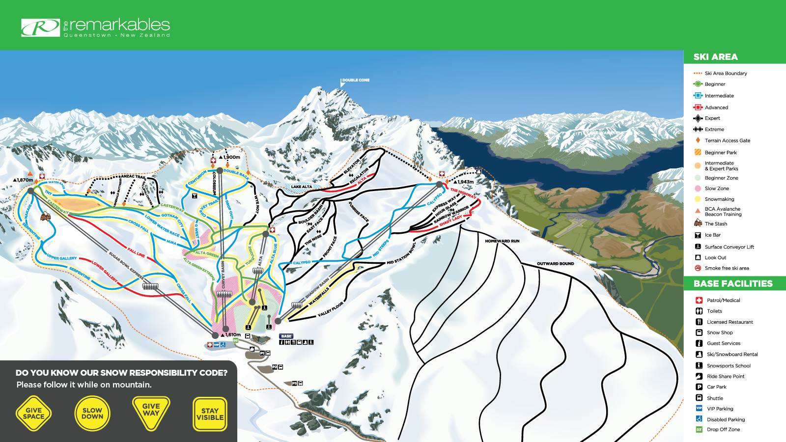

Remarkables
The Remarkables is one of the two main ski fields in the Queenstown area. The iconic ridge line is to many an escape from reality, with amazing skiing great snow coverage. With two new ski lifts in the past 3 years and a new base building, the facilities have been massively upgraded to fit the popularity of the field. With backcountry runs such as Homeward and Outward Bound and Lake Alta runs make this mountain pure bliss on a powder day. The new Suagr Bowl chair opens up so much more of the moutain and with it, so many more runs and lines for you to conquer. Opened in 1985, the Remarks has continued to grow exponetially, even despite the Covid-19 Pandemic. In the summer, the ski field becomes a beautiful scenic reserve with lots of amazing walks. Look below for the ski trail map to find out some awesome lines.
